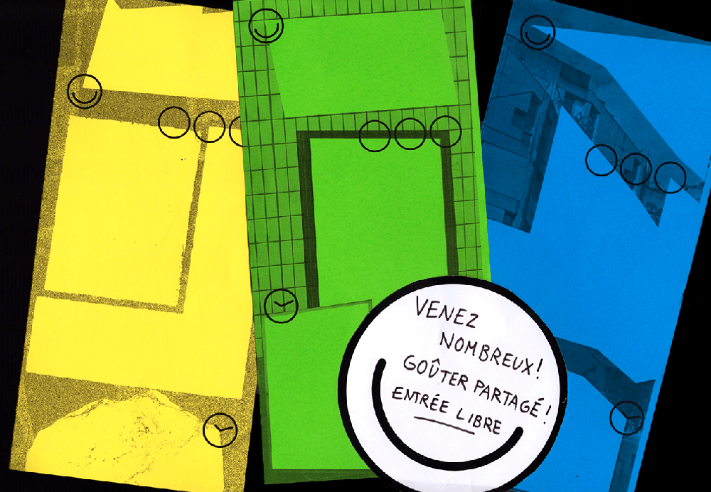
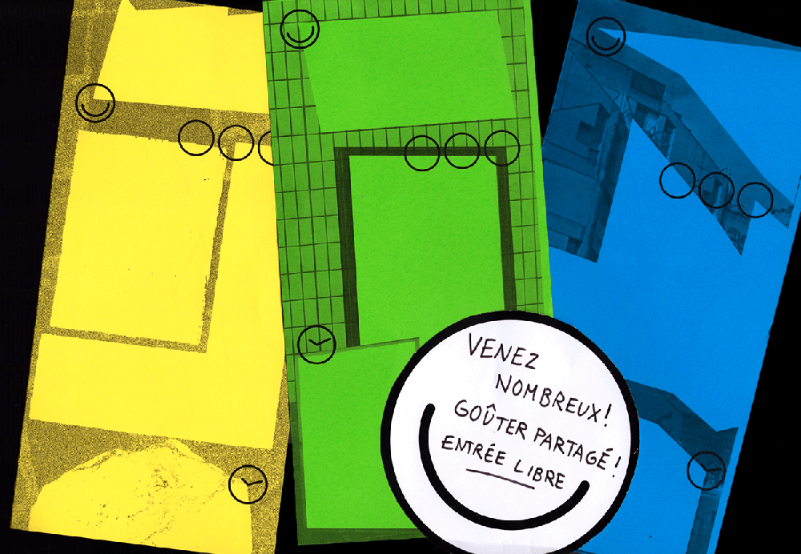

MeMO : Maison de quartier En MOuvement
Système d’affichage autonome de la programmation
de la Maison de Quartier du Petit-Ivry, afin de rendre
visible la diversité des associations présentes et de
concevoir un outil commun au service de la coopération.
Le mur se lit tel un tableur : il organise les associations
par public visé et par ordre chronologique, au cours
du mois. Réalisation d'une carte invitant les ivryens à (re)découvrir leur quartier pour accompagner le projet.
Outil réalisé avec le collectif Ne Rougissez Pas, en juin 2016.
 
